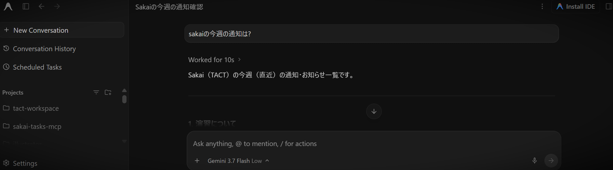

大学の Sakai LMS と AI をつなぐ MCP サーバ

Sakai Tasks MCP は、大学で利用されている Sakai LMS（京都大学 PandA、名古屋大学 TACT など）から、通知や課題の締め切り、講義資料などを取得し、Claude Desktop や Cursor などの AI アシスタントと連携するための MCP (Model Context Protocol) サーバーです。
「今週の課題の締切は？」「重要なお知らせはある？」「講義資料をダウンロードして」と AI に話しかけたら Sakai 上の情報を取得できるようにします。
AI は指示に応じて以下の MCP ツールを選び、呼び出すことができます。
| ツール名 | 説明 |
|---|---|
get_upcoming_deadlines |
締切がある課題・小テストを取得し、期限順に整理して返します。 |
get_course_dashboard |
指定した講義の状況（課題、小テスト、直近のお知らせ、授業資料）を取得します。 |
get_announcements |
通知を取得します。 |
get_assignments |
課題の一覧または詳細（提出期限、指示文、添付資料など）を取得します。 |
get_quizzes |
小テスト・オンラインクイズの一覧や締切情報を取得します。 |
get_calendar_events |
カレンダーに登録されたスケジュールやイベント予定を取得します。 |
get_course_materials |
講義の配布資料リンク・フォルダ一覧を取得します。 |
download_material |
講義資料や添付ファイルを指定のローカルフォルダにダウンロードします。 |
list_courses |
所属している講義一覧と講義IDを取得します。 |
open_settings |
大学ドメインの変更や講義ごとの情報開示ポリシーなどを設定する GUI 画面を起動します。 |
check_auth_status |
大学ポータルのログインセッションが有効かどうかを確認します。 |
C:\tools など）に解凍します。run.bat のパスを登録します。
実行ファイルのパス例: C:\tools\sakai-tasks-mcp-windows\run.bat
AI に設定ファイルへの追記を依頼する場合のプロンプト例:
あなたのMCP設定ファイルに、以下のMCPサーバーを追加してください。
名前: sakai-tasks
コマンド: C:\tools\sakai-tasks-mcp-windows\run.battact.ac.thers.ac.jp や panda.ecs.kyoto-u.ac.jp 等）を登録し、「保存して閉じる」を押します。/Users/username/tools や ~/tools など）に解凍します。run.sh のパスを登録します。
実行ファイルのパス例: /Users/username/tools/sakai-tasks-mcp-macos/run.sh
AI に設定ファイルへの追記を依頼する場合のプロンプト例:
あなたのMCP設定ファイルに、以下のMCPサーバーを追加してください。
名前: sakai-tasks
コマンド: /Users/username/tools/sakai-tasks-mcp-macos/run.shtact.ac.thers.ac.jp や panda.ecs.kyoto-u.ac.jp 等）を登録し、「保存して閉じる」を押します。